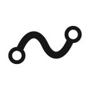
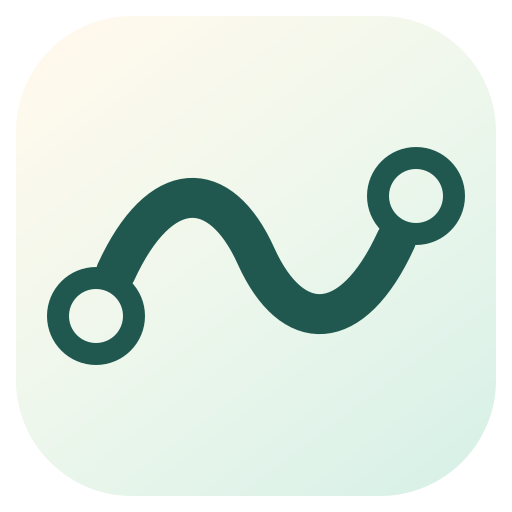

01STATIC

Static Mark
静态符号透明背景、纯黑曲线、空心端点。曲线在圆环外缘结束，圆心保持真正透明。
243264菜单栏
文档与字标
文档与字标
品牌符号始终是同一条 Flow S。静态版保持纯黑，应用图标使用浅色渐变与深松石绿，不附加动画或其他解释性元素。

透明背景、纯黑曲线、空心端点。曲线在圆环外缘结束，圆心保持真正透明。

浅象牙白向薄荷绿过渡，Flow S 使用深松石绿；整体更轻，也与 Codex 的蓝紫体系保持距离。